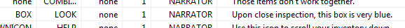
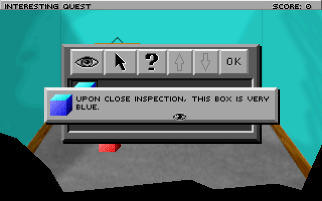

Important
SCI1.1 only.
Managing the player’s inventory¶
Well, now that we have a small box, maybe we can put it in the player’s inventory.
Open the /Scripts/Inventory script and scroll to the end. Here, create an inventory item for the box:
(instance BlueBox of InventoryItem
(properties
view 123 ; This is our box view, we'll re-use it
loop 0
signal $0002
noun N_BOX
)
)
You’ll need to add a BOX noun in this script’s associated message resource. Note that this is different from the BOX noun we used before. Nouns are specific to each “room” (unlike verbs, which are global). So this N_BOX is simply a way to refer to the box in the inventory script.
You may as well add a description of the box now (for the V_LOOK verb), in the inventory message resource:
Then, in templateInventory init() method in Inventory.sc, write the code that adds the item to the inventory list. There is a commented out stub there in the template game:
(self:
; Add inventory items here.
; add: Money AThing AnotherThing
add: BlueBox
eachElementDo: #lowlightColor 2
add: invLook invSelect invHelp invUp invDown ok
)
This doesn’t actually add the item to the player’s inventory. It just adds it to the master inventory list.
We need to do one more thing to identify the inventory item. Scripts can’t directory refer to instances in other scripts, so we need to use the index of the inventory item. This is its position in the call to add in the above code. We’re only adding one item at this time, so it’s zero-based index is just 0. We should assign a descriptive name to this though.
Open game.sh (via the Quick links, or by right clicking on (include “game.sh”)) and opening it. game.sh contains all the game-specific defines. Go to the end and add a section for inventory, where you’ll define your inventory item indices. For now, it should look like this:
; Inventory items
(define INV_BOX 0)
Finally, we are ready to give it to the player. Go back to your room (script 110) and find the doVerb method of theBox. Add a call to the get method on gEgo. This will give the ego the item.
(method (doVerb theVerb)
(switch theVerb
(V_DO
(if (not hasBoxShrunk)
(= hasBoxShrunk TRUE)
(self setScript: shrinkBoxScript)
else
(Prints {The box is small now, so you can pick it up!})
(gEgo get: INV_BOX)
(theBox hide:)
)
)
(else
(super doVerb: theVerb &rest)
)
)
)
Note that we also added a call to (theBox hide:). theBox Prop is a completely different thing than the box inventory item, even if it doesn’t seem like it to the player. So we need to hide it from view when the player takes the box.
Compile and run the game. Now when you player touches the box, it should shrink. The next time they touch it, it will be placed in the player’s inventory!
Open your inventory from the icon bar on top and you’ll see it. You can then look at it to get a description:
Note that for completeness, we’d want to modify the code in the room’s init() so that the box is never initialized in the first place if the player has already taken it. That way if we re-enter the room the box won’t be shown. You can check if the player has an item by doing:
(if (not (gEgo has: INV_BOX))
; initialize it here (if the player doesn't have it)
)